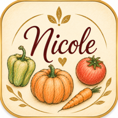
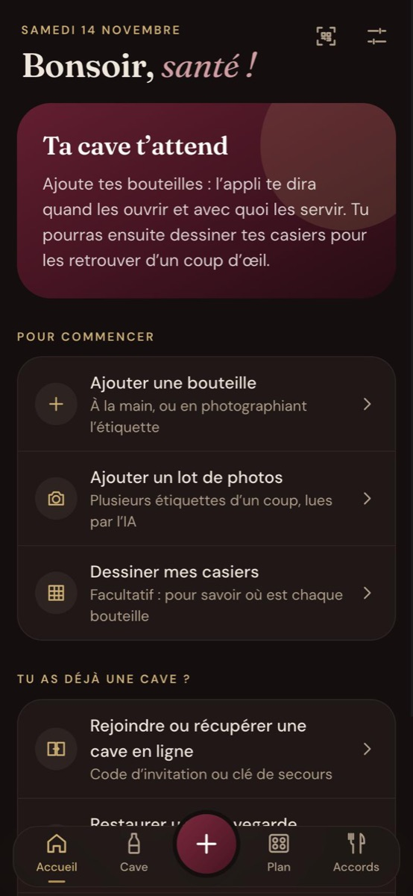

MKTS
Patrimoine · PWA
Suivi de patrimoine personnel : actions, épargne, assurance vie et immobilier, réunis au même endroit.
- Actions, assurance vie, SCPI, immobilier
- Données 100 % locales, rien ne quitte l’appareil
- Gratuit, sans inscription
Bruno Latour
Des petites applications faites maison, pour moi et mes proches. Elles s’installent sur téléphone comme une vraie app.
Patrimoine · PWA
Suivi de patrimoine personnel : actions, épargne, assurance vie et immobilier, réunis au même endroit.


Cuisine · PWA
Les recettes du livre de cuisine de ma maman, retranscrites pour les avoir toujours sous la main.

Vin · PWA
Gestion de cave personnelle : l’app dit quand ouvrir chaque bouteille et avec quoi la servir.